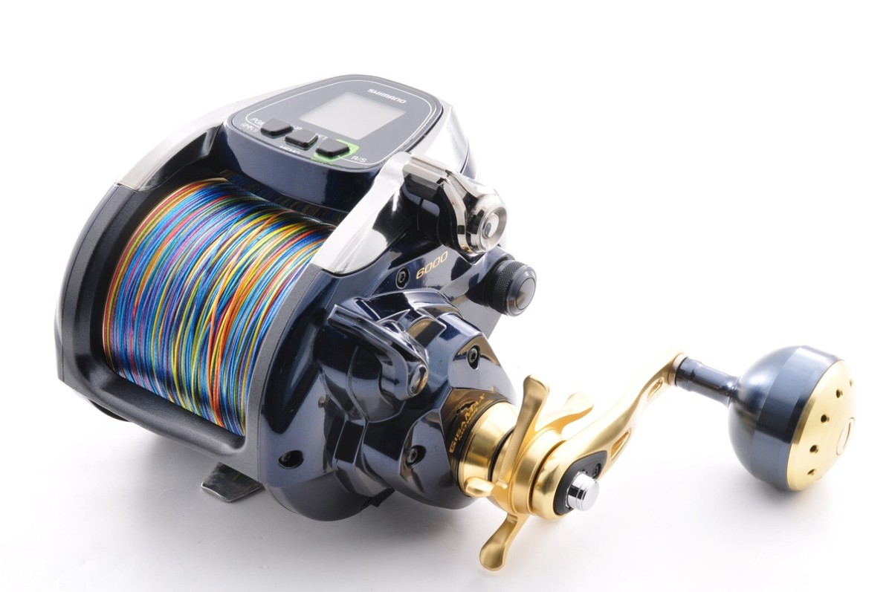

01
Shimano Beast Master 6000
Electric Powerhouse
Used for deep-water applications that require electric power and controlled lifting strength. The Beast Master 6000 is suited for targeting deeper species such as Ruby Snapper and large Grouper in waters that may exceed 200 to 300 meters, where sustained retrieval power is important.